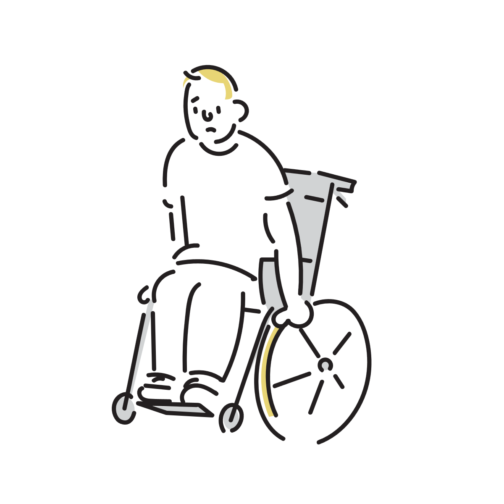
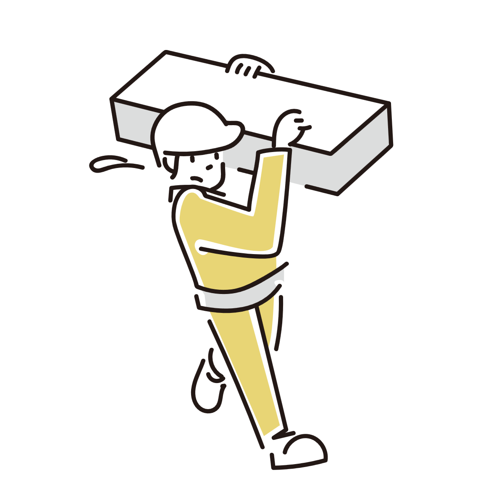
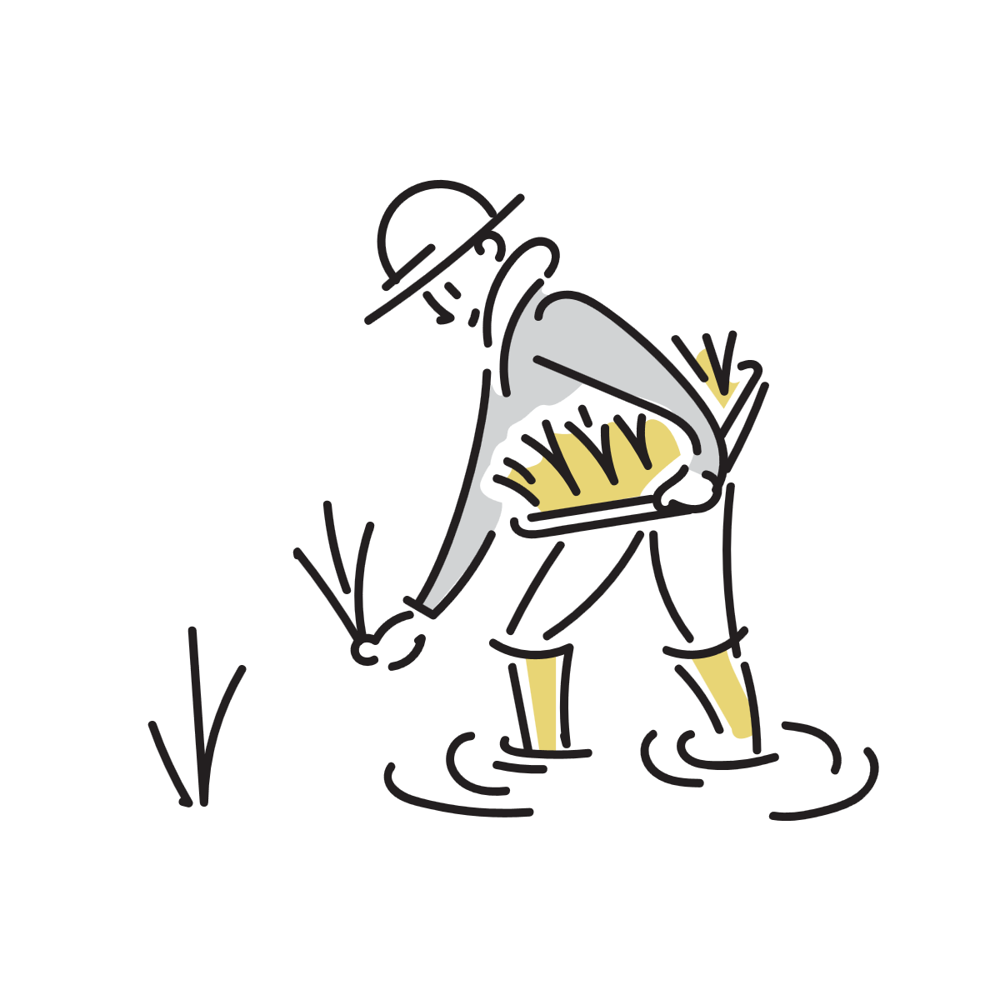
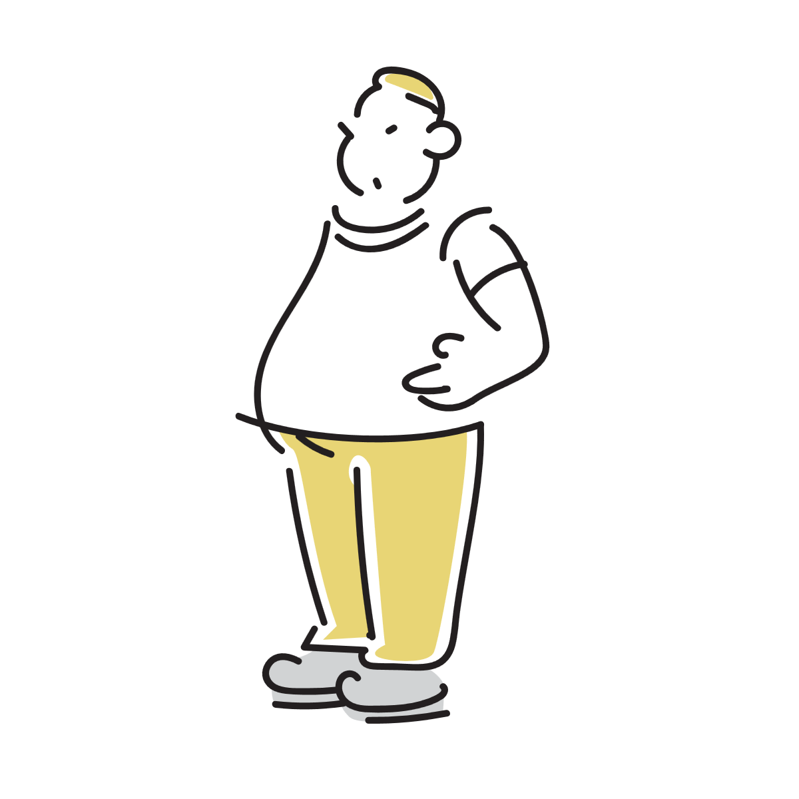
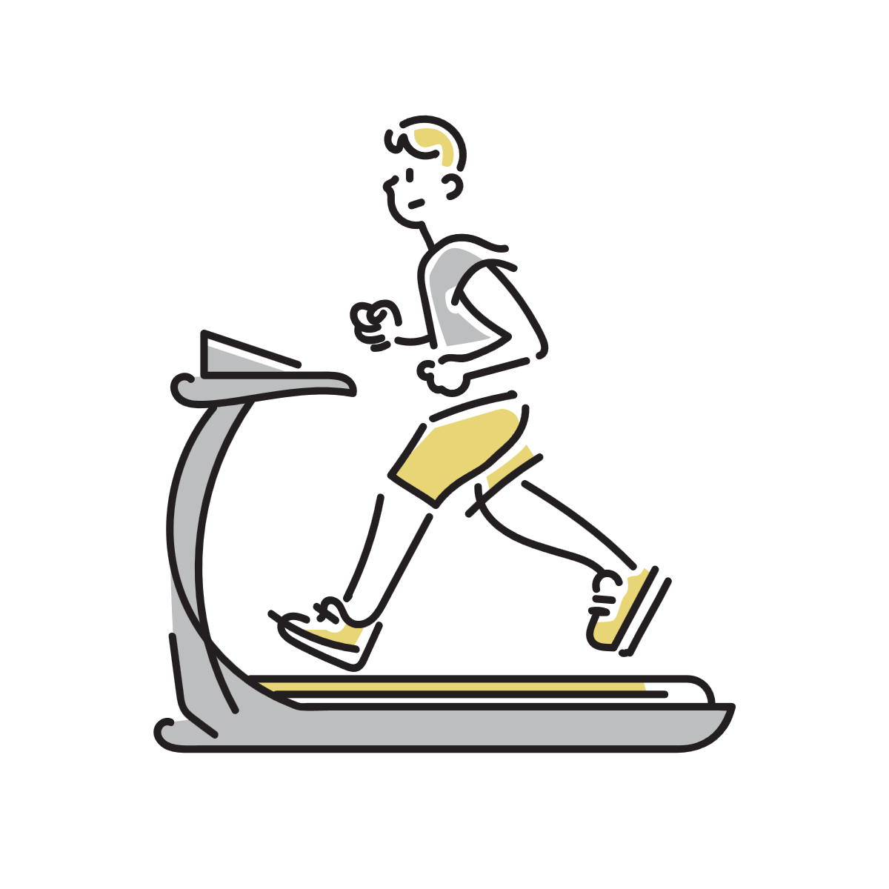

関節は消耗品というのは本当？
SNSやコミュニティの中で関節が話題に上った際に、「関節は消耗品だから」という言葉を聞いたことがないでしょうか。
この表現は誰かが言い始めてからすぐにネット全体に広まり、今では多くの人によって言われているように見受けられます。
しかしこの「関節は消耗品」という表現がどの程度実態との整合性が取れているのか、詳しく検証した記事はあまり見かけません。
この記事では本当に関節は消耗品といえるのか、もしいえるならその消耗の実態とは何なのかを考えていきます。
また、人体には２００を超える関節がありますが、今回は消耗に焦点を当てるため、 最も関連が深いと思われる股関節と膝関節について主に取り上げます。

関節が消耗するとはどういう状態？
まず関節が様々な理由や条件によって劣化していき、痛みを伴うようになることがあるというのは事実です。
このとき関節では、関節部分にある骨を覆う軟骨がすり減ってしまい、その際に欠けた軟骨の破片が原因となって炎症を起こしたり、 すり減りが進行して骨同士がこすれ合うようになり強い痛みが起きたりすることがあります。
このような状態は変形性関節症と呼ばれる疾患の一部として知られています。
もちろん関節が痛む原因は変形性関節症だけではありませんが、「消耗」という現象に最も近いのが軟骨のすり減りなので 今回はこの変形性関節症の中の、特に軟骨がすり減る現象を取り上げることになります。
医学的には変形性関節症＝軟骨のすり減りとは限らない点には注意してください。
軟骨がすり減るのは何故？
前提として、軟骨という部位は筋肉量の低下や日々の負担の蓄積によって、年齢とともにすり減りやすくなります。
それに加え、軟骨は血管が通っていないため修復されづらく、その修復能力自体も加齢に伴い低下します。
そのため、年齢とともに軟骨のすり減りがゆるやかに進行していくことは、生物学的な経過として自然なことと理解されています。
特定の動作の繰り返しが軟骨のすり減りにつながる
加齢による自然なすり減り以外にも、関節に強い負荷のかかる動作を繰り返し長時間行うことが、 軟骨摩耗のリスクを高めることが研究によってわかっています。
一例として以下の動作が比較的リスクが高いとされています。
- しゃがみ込み
- ひざまずき
- 重いものの持ち上げ、運搬
- 階段やはしごの頻繁な昇り降り
- 長時間の立位
ただしそれらの動作が単体でリスクがあるという意味ではなく、 長時間持続的に行ったり、複数回繰り返すことでリスクが高くなるということです。

職業によって変形性関節症になりやすいものがある
また同じ研究の中で、職業によって膝の変形性関節症へのなりやすさがどう変わるかも調べられています。
それによると、デスクワークが他の職業と比較して最もリスクが低いと見なされ、 デスクワークを基準（1倍）とした場合、変形性膝関節症のオッズはそれぞれ以下の倍率になると算出されています。
- 床貼りおよびレンガ職人 2.51倍
- 大工 2.49倍
- 農業従事者 1.64倍
- 建設作業員 1.63倍
- 清掃員 1.51倍
これらの職業は重いものの運搬や関節に負担のかかる動作を繰り返し行うため、リスクが高くなると推察されます。

体重は関節への負荷と関係が深い
関節は動作に伴い負荷がかかりますが、その負荷は動作によって体重の数倍に及びます。
例えば平地を歩くときに膝関節にかかる負荷は、体重の約3倍、階段の昇り降りは体重の約5倍と言われています。
これらの負荷は体重が基準になるため、体重が1kg増えると、 平地を歩くときの膝関節には約3kg重、階段の昇り降りでは約5kg重に相当する力が追加でかかる計算になります。
逆に言えば体重を数kg減らせば膝関節への負荷は大幅に下がることになり、 実際に痛みを伴う変形性関節症の人が、体重を減らしたことで痛みが大幅に軽減されたというケースもあります。
研究でも体重・BMIと変形性関節症の間には強い相関関係があることが知られていますが、 実は重量が増えることによる物理的負荷の増大だけでなく、肥満状態のときに脂肪組織から分泌が増える炎症性物質が 関節の軟骨を分解する働きを促し、変形性関節症を悪化させることも明らかになっています。
以上のことから、体重管理は身近でありながら関節を守るためにとても重要な要素だと言えます。

怪我による軟骨のすり減り
靭帯損傷、半月板損傷、関節を巻き込む骨折などの大きな怪我をした場合、加齢によるすり減りよりも 急激かつ広範囲に軟骨の摩耗や組織破壊が進むケースがあります。
これは衝撃によって軟骨が直接的に破壊されたり、急性炎症による免疫反応によって軟骨組織を分解する酵素が大量に放出されたり、 関節が不安定になることで特定の部位に異常な圧力がかかることで軟骨が摩耗するなど、 日常動作によるすり減りとは全く違う過程で軟骨のすり減りが進行します。
このケースは冒頭の疑問の「消耗」とはやや外れた話題にはなりますが、 軟骨を保護したい人にとって、このような怪我をしないことが大変重要であることは留意してください。
関節は消耗品なのか
ここまでの話から、「関節＝消耗品」という仮説は、広範囲に適用できる便利な法則ではないものの、 一概に全否定できるものでもなく、特定の範囲内においては正しいという回答が最も近いと考えられます。
その「特定の範囲」の中心にあるものが「関節への負荷が高い動作を、繰り返し行うこと」で、 一定基準を超える体重がそのリスクをさらに引き上げる要因となる、というのが正しい理解といえるでしょう。
避けられない消耗とどう向き合うのか
では軟骨のすり減りを最小限に抑えるために、日常の動作も最低限のものに留めるのがよい選択となるのでしょうか。
もし関節をほとんど使わないというのであれば、それは運動を行わないことを意味し、関節を支える筋肉の衰退を招くことにつながります。
筋肉には関節を安定させ、動作時にかかる負荷を受け止める役割があります。
そのため、筋肉が衰えると関節を十分に支えられなくなり、関節への負担が大きくなる可能性があります。
よって、関節を支える筋肉を維持するための運動は必要、というのが結論となります。
ただし既に痛みが出ている場合は、自分では許容範囲と思うような運動でも症状を悪化させる可能性があるので、 医師や理学療法士に相談して内容を調整したうえで行う方が安全だと思われます。
また、前述の通り過大な体重は変形性関節症を引き起こす大きな要因となりうるので、 筋トレだけでなく必要に応じて有酸素運動を取り入れることによって適切な体重を維持することも重要となります。

参考情報と注意点
関節の痛みや運動について不安がある場合は、自己判断せず医師や理学療法士に相談してください。